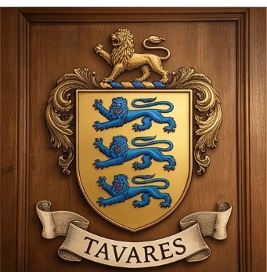
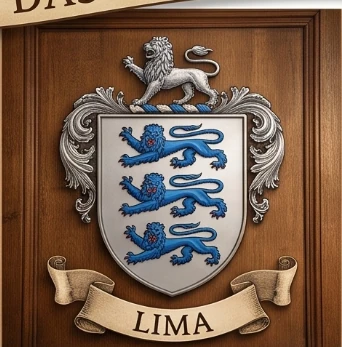
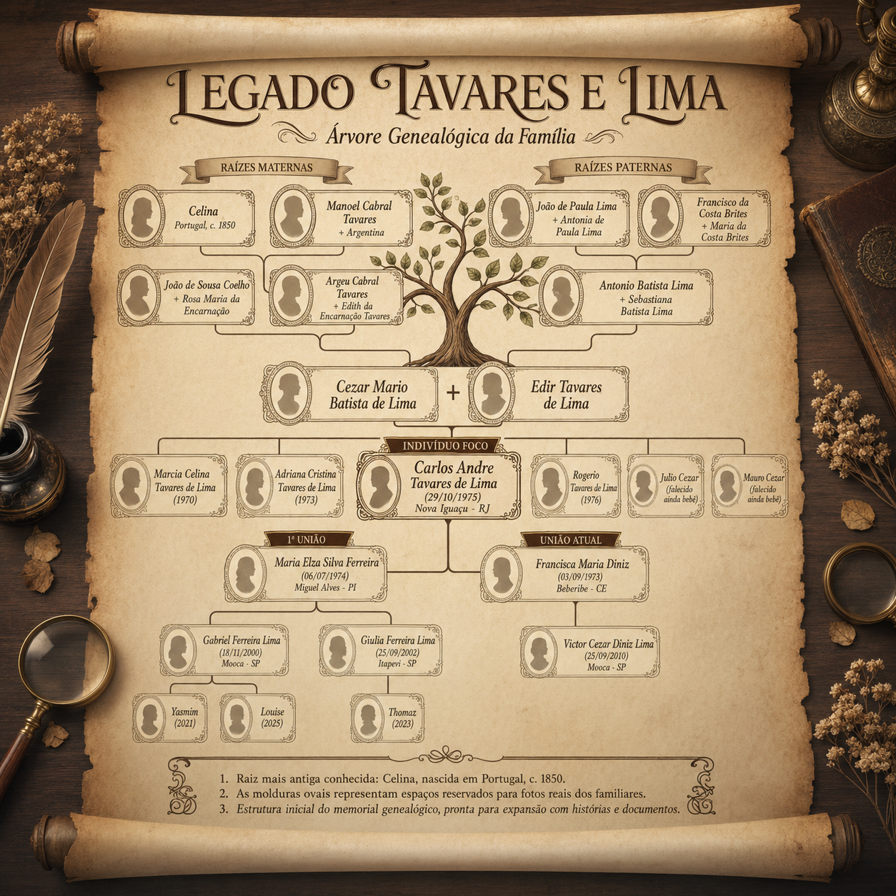
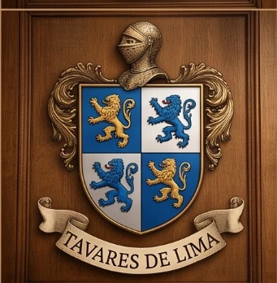
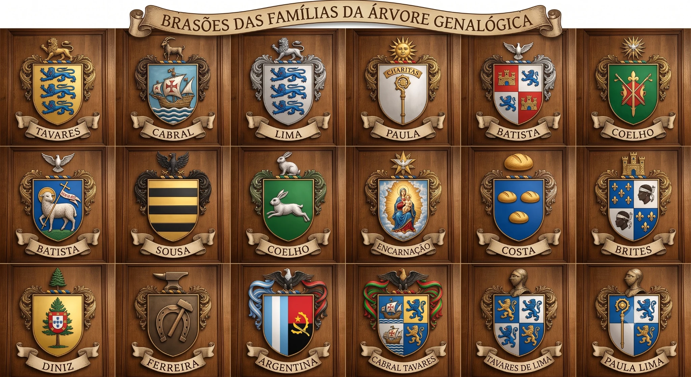

Portugal
Celina, nascida aproximadamente em 1850, é a raiz mais antiga atualmente conhecida.


Memórias que atravessam gerações. Uma casa digital para nomes, histórias, imagens, documentos e caminhos familiares.

Cada núcleo conduz a uma parte do legado. Arraste a teia, aproxime e toque em um ponto para navegar.
Toque em qualquer pessoa para abrir sua página de história. As fotos provisórias serão substituídas pelas imagens reais.
Todos os membros conhecidos aparecem abaixo. Clique em qualquer fotografia ou nome para abrir a história individual.
Marcos conhecidos da família. Novos acontecimentos poderão ser adicionados sem alterar a estrutura.
Uma linha do tempo com 21 acontecimentos entre 1850 e 2026, relacionados às gerações que viviam em cada período. As reações familiares são hipóteses cuidadosas e aparecem separadas dos dados comprovados.
O acontecimento mundial é documentado por fontes históricas. A presença de cada ancestral depende das datas conhecidas; quando faltam documentos, o site usa as classificações “provável” ou “possível”, sem transformar hipótese em fato.
Dez avanços que mudaram a medicina, a energia, a comunicação e os transportes. Cada cartão explica como era a vida antes, qual benefício surgiu e quais gerações da família estavam no mundo naquela época.
Os cartões apresentam marcos reconhecidos, mas destacam que muitas descobertas resultaram do trabalho acumulado de cientistas, técnicos, pacientes, instituições e comunidades ao longo de vários anos.
Uma jornada que conecta Portugal, Rio de Janeiro, Piauí, São Paulo e Ceará.
Celina, nascida aproximadamente em 1850, é a raiz mais antiga atualmente conhecida.
Carlos viveu boa parte de sua vida na Mooca. Entre 1995 e 2002, viveu com Maria Elza em Itapevi. Gabriel nasceu na Mooca e Giulia nasceu em Itapevi. Após 2004, Carlos constituiu sua família atual com Francisca; Victor nasceu na Mooca em 2010.
Desde 2002, Maria Elza, Gabriel e Giulia vivem em Miguel Alves. Carlos também morou seis meses na cidade antes de retornar à Mooca. Atualmente, sua família com Francisca e Victor vive em Beberibe.
Registre histórias sem precisar editar o código. As contribuições ficam salvas no navegador e podem ser exportadas.
“Uma família permanece viva quando suas histórias encontram quem as escute, preserve e transmita.”
Conteúdos já publicados foram incorporados como parte do acervo digital.
Reprodução aberta diretamente no YouTube para funcionar tanto no arquivo local quanto no site publicado.
Abrir vídeo ↗O player incorporado foi substituído por acesso direto, eliminando o erro de configuração 153.
Abrir vídeo ↗Vídeos de Beberibe e registros produzidos desde 2019.
Visitar canal ↗Conteúdos diversos associados ao perfil e à trajetória digital.
Visitar canal ↗Certidões, retratos, cartas, diplomas e objetos de valor afetivo organizados em um museu digital familiar.
Todas as imagens já reunidas no memorial aparecem abaixo, com identificação, responsável pelo envio e período de inclusão. Os familiares sem fotografia recebem um espaço reservado.
Origem, significado, presença na árvore e situação da pesquisa heráldica de cada sobrenome familiar.

Os escudos desta seção são símbolos visuais do memorial. Quando existem armas históricas associadas a uma linhagem com o mesmo sobrenome, isso é informado como associação histórica — não como prova de que este ramo familiar possui direito ou descendência daquele brasão.
Os brasões abaixo foram recortados da composição familiar enviada para o projeto. Eles funcionam como símbolos visuais e referências históricas ou artísticas, sem comprovar automaticamente direito heráldico.

Familiares e pessoas que possuam informações, fotos ou documentos podem enviar uma proposta. Carlos receberá o material e decidirá o que será publicado.
Uma plataforma genealógica personalizada, fácil de alimentar com nomes, datas, fotografias, vídeos e biografias — entregue pronta para publicar.
Você recebe uma ficha simples com nomes, parentescos, datas e textos.
As fotos são organizadas por pessoa, com legendas e identificação de quem enviou.
O memorial é entregue em ZIP, preparado para computador, celular e publicação.
Arraste cada pessoa para a geração correta. No celular, toque primeiro no nome e depois no destino.
Selecione ou arraste o primeiro nome.
O site acompanha o tempo de exploração e propõe uma pausa visual orgânica. O fundo desacelera, a luz suaviza e uma respiração guiada ajuda a descansar os olhos.